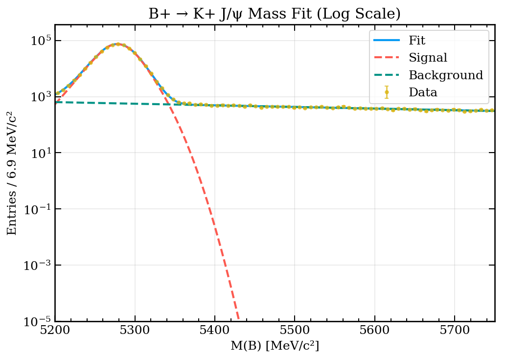
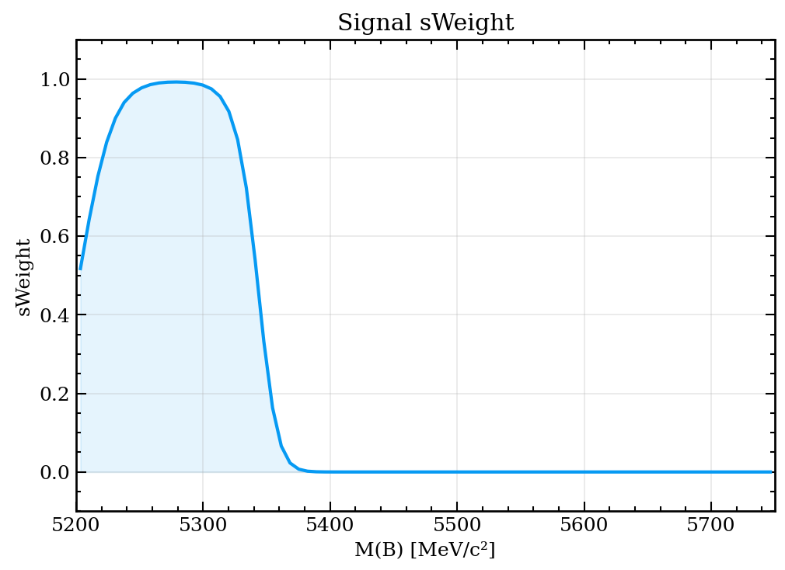

About Me
Mechanical Engineering graduate and current Physics with Astrophysics student (penultimate year) at the University of Bristol. Passionate about experimental particle physics, flavour physics, rare decays, and CP violation. Experienced in numerical simulations, computational fluid dynamics, spectroscopy, and data analysis.
I have worked as a research intern at KAUST and University of Alberta, with publications in high-temperature spectroscopy, shock tubes, and environmental fluid mechanics. I enjoy combining computational modeling with experimental work to answer fundamental physics questions.
Research Interests
- Experimental particle physics
- Flavour physics – rare decays & CP violation
- High-temperature spectroscopy
- Computational fluid dynamics (CFD)
- Shock tube / detonation tube characterization
Publications & Conferences
Education
University of Bristol
BSc Physics with Astrophysics (First Class)
Year 1 Physics Representative | Student Helper for the School of Physics
Societies: FS AI, Bij, Chaos
Colorado School of Mines
Exchange Programme – Mechanical Engineering
Studied advanced mechanics, thermodynamics, and CFD in the USA.
Private Pilot License – Escuela de Aviación Civil del Perú
2nd place in class

Where everything started
The first time I sat in a Cessna 175 Skyhawk, I realized physics wasn't just equations on a blackboard — it was lift, drag, thrust, and weight working together in perfect balance. That feeling of takeoff, the hum of the engine, the instruments coming alive… that's when I truly understood the principles of machines and applied physics.
Learning to fly taught me intuition for aerodynamics, control systems, and the beautiful intersection between theory and real-world engineering. It remains my favourite place — not just in the sky, but in my journey as a scientist.
Work Experience
Research Experience
- Contributed as a member of the PID calibration team for the LHCb experiment, focusing on Run 3 data
- Conducted studies on rare decays B⁺ → K*⁰ K⁺ and B⁺ → φ K⁺
- Analyzed Monte Carlo simulated data for B⁰ → D*⁻ τ⁺ ντ decays using Python and ROOT, and developed a Boosted Decision Tree (BDT) with AdaBoost for signal-background separation
- Studied the reconstruction resolution of the T-odd triple product (sensitive to transverse tau polarization and CP violation), identified and corrected biases in online reconstruction, and scaled the expected sensitivity for future Belle II luminosities (up to 50 ab⁻¹)
- Participated in laboratory safety and spectroscopy training, acquiring essential knowledge for scientific research
- Participated in a laser diagnostic project involving high-temperature methane measurement
- Utilized Schlieren imaging in a detonation tube project to analyze shockwaves and estimate detonation energy
- Performed tests using CW and DFB lasers for infrared spectrum measurements in laser diagnostics
- Developed MATLAB codes to analyze experimental data, enhancing data processing and interpretation capabilities
- Conducted theoretical investigations on the merging behaviour of turbulent plumes using the curvature model developed by Dr Morris Flynn's research team at the University of Alberta
- Utilized MATLAB to assess the conduct of turbulent plumes in both stratified and unstratified environments
- Gained proficiency in theoretical modelling techniques and developed expertise in analyzing plume behaviour
- Collaborated with a research team to produce valuable insights into the behaviour of turbulent plumes in different environments
Additional Experience
Provided tutoring in mathematics and physics, covering topics including mechanics, Taylor series, electrostatics, harmonic oscillators, and other foundational concepts in university-level physics and mathematics.
Awards & Scholarships
- Think Big Scholarship – University of Bristol (2024)
- Santander Skills Scholarship – Harvard Business Publishing (2023)
- ELAP Scholarship – Winner (2022)
- IEC Young Professional – INACAL (2020)
- National Champion – Brazilian Jiu-Jitsu (2015, 2016)
Software Projects
sWeights for Muon PID Calibration (B⁺ → K⁺ J/ψ)
sWeights are a statistical tool used in high-energy physics to separate signal from background in a mixed sample. Using a control variable (typically mass), sWeights assign each event a probability of being signal, allowing pure signal distributions to be extracted for any other variable (such as PID response). This is particularly important for Muon Identification (MuonID) calibration, where we need to measure the efficiency and misidentification rates using clean signal samples.
This code is an adaptation of the original pidcalib-sweight-fits package developed by Michele Atzeni. The original framework provides sWeight fits for various PID calibration channels. This adaptation focuses specifically on the B⁺ → K⁺ J/ψ (→ μ⁺μ⁻) decay, which serves as an alternative muon PID channel for Run 3 of the LHCb experiment.
The B⁺ → K⁺ J/ψ channel is particularly well-suited for muon identification studies because:
- The J/ψ → μ⁺μ⁻ decay provides a clean muon pair with known mass
- The B meson mass peak (5279 MeV) is well-separated from background
- High statistics available in Run 3 data
- Independent cross-check for muon PID efficiency measurements
The signal shape is modeled using a Double-sided Crystal Ball function, which accounts for the asymmetric tails of the B⁺ peak due to final state radiation and detector effects. This provides a more accurate description than a simple Gaussian, resulting in better sWeight extraction.

Figure 1: B⁺ → K⁺ J/ψ mass fit with Double Crystal Ball signal shape (green) and exponential background (blue). The fit achieves χ²/ndof = 1.41, indicating excellent agreement with data.

Figure 2: sWeight as a function of the B meson mass. Events near the peak (5278 MeV) have high signal purity (sWeight ≈ 1), while sideband events are predominantly background (sWeight ≈ 0).
Features
- Double Crystal Ball signal model for B⁺ → K⁺ J/ψ
- Maximum likelihood fit with Poisson statistics
- sWeight extraction using sPlot technique
- Optimized for LHCb Run 3 data processing
Code Repository
https://gitlab.cern.ch/apiminch/pid_muon
Original reference: Michele Atzeni - pidcalib-sweight-fits
Volunteering
- Academic Mentor – Physics I, II & Mathematics I
- STEAM projects for Peruvian schools – UTEC & Aleup
- UTEC INVENT
Hobbies & Interests
- Brazilian Jiu-Jitsu (2x National Champion)
- Aviation – Private Pilot
- Computational modeling & open-source physics tools